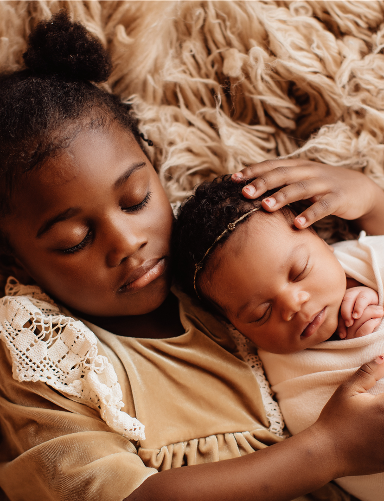
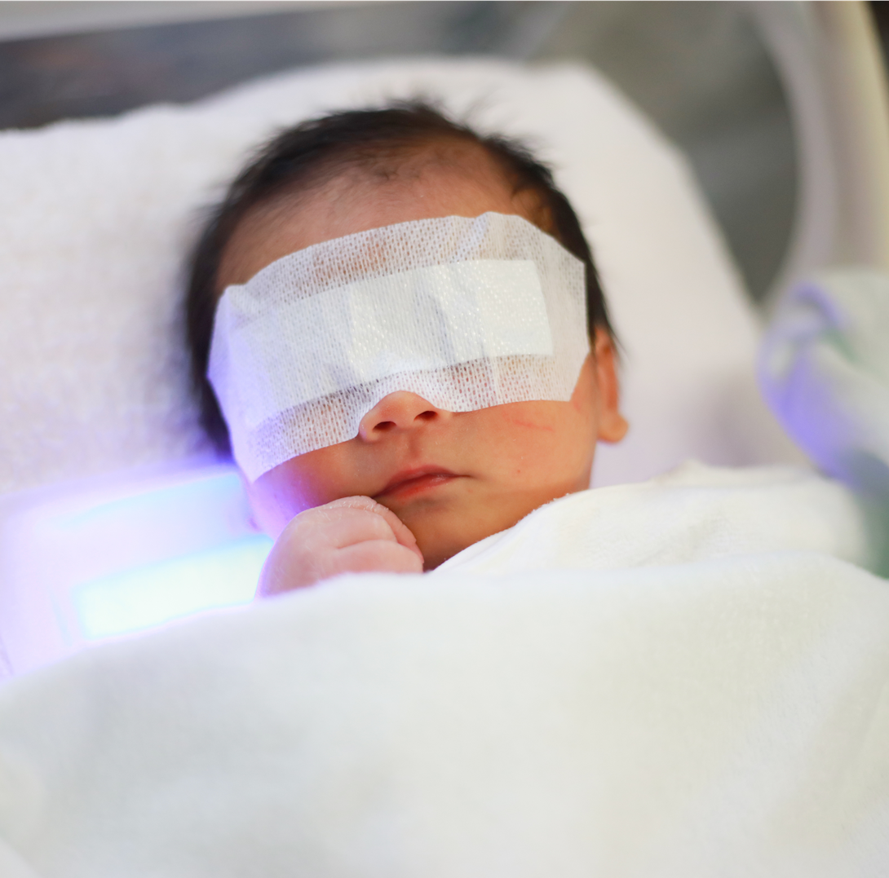
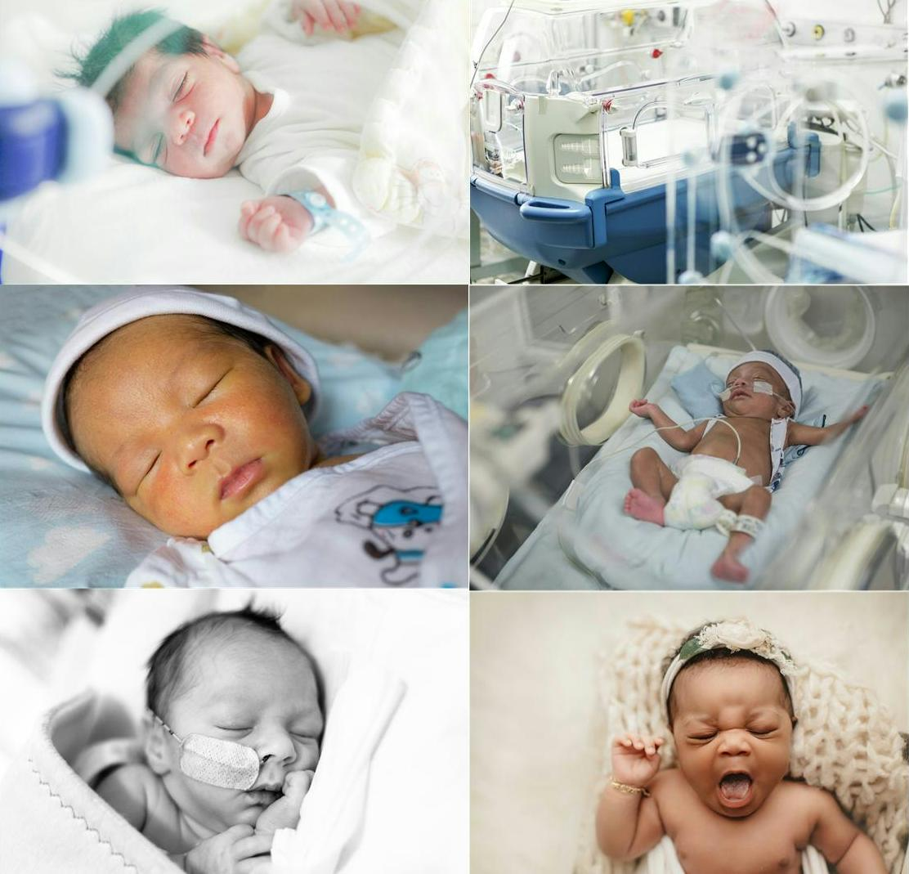
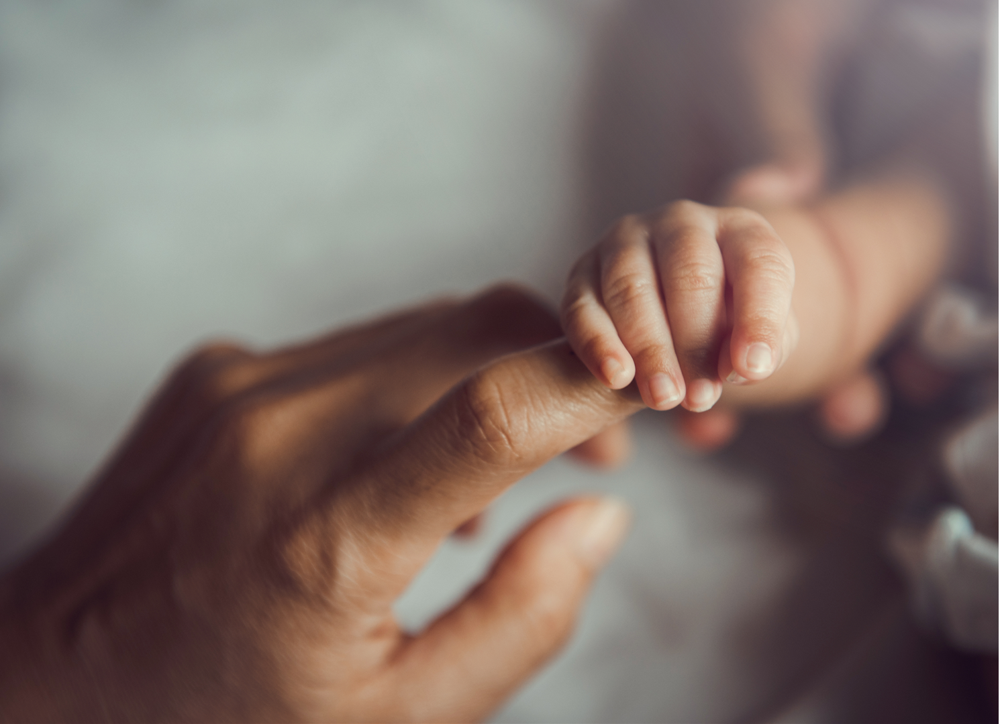

In Loving Memory of Kelsey Alexandra Baker
(February 18, 1997 — February 21, 1997)
Kelsey Alexandra Baker was a beautiful baby girl born to Robert and Mindy Baker on February 18, 1997
at Northside Hospital in Atlanta, Georgia.
Though she lived for only three days, those days were filled with immeasurable love and lasting
memories. Her short time here forever changed the hearts of all who knew her.
In the days that followed, amidst heartbreak, Robert and Mindy made a choice: to honor Kelsey's
memory by helping others. They carefully packed each item and began donating to charities that
support new mothers and babies in need. This seemingly small gesture of healing created a spark that
later became our mission.
Today, Kelsey’s Kloset is committed to providing critical care packages to mothers and families in
need. We believe that out of deep sorrow, light can shine—and through Kelsey’s name, we bring love,
support, and dignity to others walking their own journeys.

Let's start with the basics.
A medically underserved area or hospital is defined as an area or population with too few primary
care
providers, high infant mortality, high poverty, or a high elderly population. For medically
underserved
newborns, this means that children are literally born into circumstances where not even the most
basic
infant needs are being met. Here we see children being born into by abject familial poverty and
single
parent homes with a parent(s) who either do not have health insurance, cannot afford it, or have
inadequate coverage to absorb the demand and costs of caring for a newborn. In these homes basic
necessities, such as diapers, clothing, bottles, and other basic necessities become nearly
impossible to
come by.
These children rely on the donations or people and organizations like Kelsey's Kloset to step in and
provide for those in need. The mission of Kelsey's Kloset is to ensure that we provide a safe start through our partnerships with Grady and local area
hospitals.
Through your continued support, we are able to provide families with care packages and resources
that
preserve lives and ensures that no child falls in the gap. This seemingly small, yet critical
gesture
has been the single driving force behind Kelsey's Kloset for the past 20 years. We invite you to
explore
these pages to better understand both the mission and the vision of our organization.
DEFINING THE NEED
OUR MISSION
Kelsey's Kloset is a non-profit 501(c)(3), committed to supporting newborns and families in medically
underserved communities by providing critical resources and care during their most vulnerable moments.
Through our partnerships with local hospitals, we
supply critical items like diapers, clothing, and bottles to ensure that every child starts
life with the basic necessities they deserve. Our mission is to ease the hardships faced by families in
need, promoting health, hope, and a brighter future for every newborn we serve.
OUR VISION

The vision of Kelsey’s Kloset is to create a world where every newborn, regardless of circumstance, has
access to the basic essentials needed for a healthy start in life. We strive to build stronger, more
resilient communities by ensuring that no family in need faces the burden of raising a child without
support. Through our continued partnerships and efforts, we aim to provide lasting impact, hope, and
stability to the families we serve. Virtually dollar we spend goes directly in to fulfilling and sustaining
this vision. We hope that you will join us as we continue to grow and expand our relationships with
hospitals throughout Atlanta, Ga and beyond.
Overcoming poverty is not a task of charity, it is an act of justice. Like Slavery and Apartheid,
poverty is not natural. It is man-made and it can be overcome and eradicated by the actions of human
beings.
OUR WHY
The U.S. child poverty rate, according to the U.S. Census Bureau's supplemental poverty measure, has
risen from 12.4% to 13.7% in just the last few years, meaning there are nearly 10 million children
living in poverty.
Even more unfortunate is the fact that the U.S. consistently ranks near the bottom of developed nations
in terms of child poverty, which means that childhood poverty will continue to be a problem for
underprivileged and underserved communities. We know that our work is critical because just as with
education, how an infant begins their life has a significant impact on how that child grows and develops
throughout their lifetime.
WHY DONATE
KELSEY’S KLOSET IS A
20-YEAR-OLD, 501(C)(3) NON-PROFIT
Kelsey’s Kloset is a 20–year-old, 501(c)(3) non–profit.
So not only are your donations tax deductible, but a charitable gift of just $100 covers the total cost
of one of our New Life Critical Care Packages.
EVERY CHILDS JOURNEY IS DIFFERENT, WHICH IS WHY WE ARE STRIVING TO BECOME A CONTINUOUS SUPPORT SYSTEM
FOR FAMILIES IN NEED.
Each child story and journey is different, which is why we are striving to become a continuous support
system for families in need. We see our work as not only necessary, but as a truly selfless act to
better the lives of children and families with every dollar we receive.
NEARLY 100% OF ALL PROCEEDS ARE DEDICATED TO CHILDREN AND FAMILIES IN NEED.
Even better nearly 100% of all proceeds are dedicated to children and families in need. All staff and
personnel costs are absorbed by the founders to ensure that we help as many households as possible.

DONATE A BASKET
$
CUSTOM DONATION

$
MEET JESSY
Dedicated to empowering women and children in underserved communities, Jessy leads Kelsey’s
Kloset with compassion, expertise, and a deep commitment to health and social equity. As
Executive Director, she oversees the creation and execution of strategic programs and
development of community partnerships to ensure mothers and their infant children receive
the support they need to thrive.
With a background in education, mental health therapy, and nonprofit community service,
Jessy has spent over 25 years working to remove barriers to educational equity and essential
social services, primarily for children and families. Prior to her role as executive
director of Kelsey’s Kloset, Jessy has always been a leading advocate for women and girls;
namely through her work with the Atlanta Women’s Foundation Inspire
Atlanta program as a top fundraiser, community volunteering with the Junior League of
Atlanta, and she served for six years on the Board of a prominent all girls school in
Baltimore County, MD as the chair of their diversity efforts. As a mental health private
practice owner, Jessy is a strengths-based therapist who is dedicated to enhancing
resilience amongst her clients. Her career in education as a teacher and administrator
focused on collaborative work with parents to improve learning outcomes for their children.
Through her professional and personal experiences, Jessy has demonstrated her dedication to
empowering underserved families. She believes that when women thrive, their children
flourish, and societies ultimately grow stronger. Jessy’s commitment to Kelsey’s Kloset will
continue to highlight the significance of supporting women and children in their most
vulnerable moments.